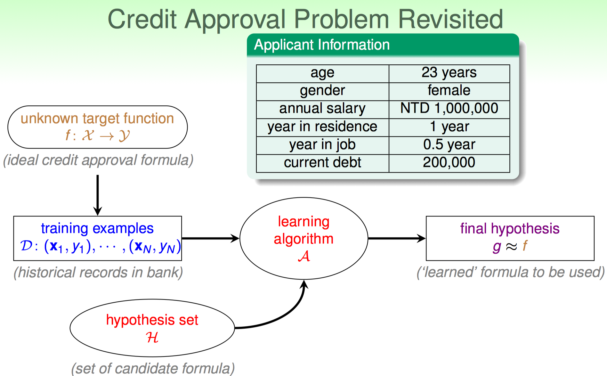
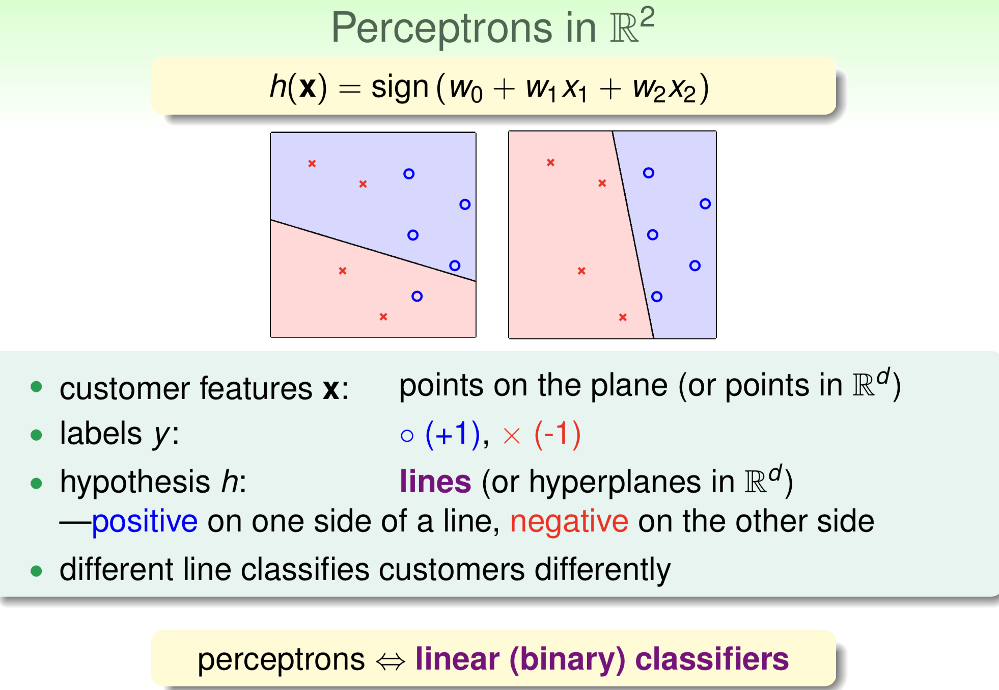

Perceptron Hypothesis Set
Review of previous lecture
上节课程讲过，机器学习的整个架构可以用下图表示

核心部分是：Learning algorithm $A$ take $\mathcal{D}$ and $\mathcal{H}$ as input, to generate a concrete hypothesis $g$ which could make prediction on $\mathbf{x}_{new}$ .
换句话说，学习算法(A)的输入有两个：
- Hypothesis set: $\mathcal{H}$
- Training Data: $\mathcal{D}$
学习算法的目的就是：
在hypothesis set 中诸多的 hypothesis（funcations）中选择出来一个最好的作为我们最终想要的结果，这个选择的过程依赖于对于数据集 $\mathcal{D}$ 的利用。数据集是事先准备好的，无需多虑。
1. 如何确定 Hypothesis set 的具体形式（Hypothesis set 到底长什么样子？）
2. 我们怎么在其中选出“最好”的 $g: \mathcal{X}\rightarrow\mathcal{Y}$
这也是本节课的内容重点.
A Simple Hypothesis Set: Perceptron
这个世界上有很多种类 Hypothesis Set，我们需要从这么多种类中选择其中一类，来作为 Learning Algorithm 的基础。选择结果依赖于：
人类的先验知识（我偏执地想用线性模型，自然不会选择那些非线形的 Hypothesis set）
e.g. NNs, 所谓非线性的 Hypothesis Set 是指：这个set里的每个function 都是非线性函数。
问题的特性
Sequential Labelling Vs. Multi-class ，我认为前者难度较高，我需要一个复杂的函数才能够fit data well, 因此我就会选择一个复杂的 Hypothesis Set.
数据的特质和大小
如果数据量比较小，那么我只需要一个简单的函数，因此我选择一个simple 的hypothesis set, 这样可以避免过拟合；如果数据十分大，这就使得我们有可能训练比较复杂的Hypothesis Set，从而得到一个非常powerful 的 function。
计算资源的限制
e.g. 数据流极大并且计算资源丰富，我需要非常复杂但是十分强大的function，因此我可能会选择NNs作为我的 Hypothesis Set.
本节课先介绍一个简单的（诸多种类中的一种）Hypothesis Set：Perceptron-一种2元-线性分类器。
Algorithm:
$\text{For } \mathbf{x}=\lbrace x_1,x_2,…,x_d \rbrace(\text{feature vector}),\text{compute a }\color{red}{ weighted \ score} \text{ and}$
$$
\text{let } y=+1, \text{ if }\sum_{i=1}^d w_ix_i > threshold \\
\text{let } y=-1, \text{ if }\sum_{i=1}^d w_ix_i < threshold\\
$$
$y\in {+1(\text{good}),-1(\text{bad})}-$ linear formular $h\in \mathcal{H}$ is:
$$
\color{red}{h(\mathbf{x})=sign(\sum_{i=1}^d w_ix_i - \text{threshold})}
$$
$h(\mathbf{x})$ 称为 “perceptron hypothesis”.
一个小问题：根据上述公式，我们的$h(\mathbf{x})$ 是由什么决定的？
答案是：$w_i(i=1,…,d)$ 和 $\text{threshold}$
Vectorization of Perceptron Hypothesis
在机器学习中，我们往往将计算（无论是模型部分还是其他部分，能向量化就像量化！）向量化，目的有2:
- 提高运算速度
- 表达简洁紧凑
$$
\begin{align}
h(\mathbf{x})&=sign((\sum_{i=1}^d w_ix_i) - \text{threshold})\\
&= sign((\sum_{\color{red}{i=1}}^d w_ix_i) + (\text{-threshold})\cdot(+1))\\
&=sign(\sum_{\color{red}{i=0}}^d w_i x_i)\\
&=sign(\mathbf{w}^T\mathbf{x})
\end{align}
$$
其中，$\mathbf{w},\mathbf{x}\in\mathcal{R}^{d+1} \text{and with } \mathbf{w_{[0]}=\text{threshold},\mathbf{x}_{[0]}=+1} $.
现在，我们的 $h(\mathbf{x})$ 最终由一个量决定：$\mathbf{w},i.e.\text{parameters of perceptron.}$ .
Perceptron in $\mathbb{R}^2$
Perceotron 的公式已经给出，那么它到底是个什么样子呢？ 我们假设每example只有两个feature的情况下($\mathbf{w},\mathbf{x}\in\mathbb{R}^2$)，其如下图所示

上图中的直线称之为 Decision boundary: 它一边的点（代表training data 中的一个example）属于正例，另一边的点属于负例。
这条直线是怎么来的？
根据之前的内容不难判断：
$$
\text{when }h(\mathbf{x})=0
\Rightarrow w_0+w_1x_1+w_2x_2=0: \text{a line on the plane.}
$$
Perceptron的目的就是根据数据学习出这条直线(or hyperplane in high dimension space)
也就是说在Perceptron中：
$\mathbf{w}^T\mathbf{x}=0$ 确定了decision boundary
learning algorithm 可以学习出 $\mathbf{w}$, 即得到$h\mathbf{(x)}$.
当有新的数据 $\mathbf{x}_{new}$ 时, 将其带入:$ h(\mathbf{x}) $ 即可判断其类别是属于 +1（$h(\mathbf{x})>0$） or -1（$h(\mathbf{x})<0$） 。
Perceptron Learning Algorithm
TO-DO
Guarantee of PLA
Non-Separable Data
TO-DO…
$\mathbf{x}_{new}=x$
$h(\mathbf{x}_{new})$